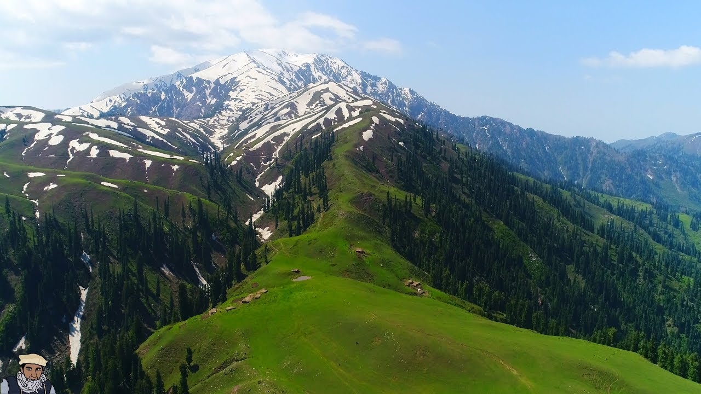

The land of wonder , that is what i call Naran Kaghan as everytime i go there it surprises me with something new. This valley is the highest and coldest valley among all the popular toruist destinations. A unique thing about naran is that it is a doorway that opens the wonders of Korakaram's enormous giants to us. It truly is a special place. The video below might give you an idea of what NARAN holds
Not really in NARAN but still pretty close to it. The best thing about this lake is that it is just on the korakoram highway and you dont have to hike or pass through rigorous mountain roads to get there. It is a very big lake and the weather there is absolutely glorious and best thing is humans can't really get close to it so it has preserverd its natural beauty
Someone once said to me " ANSU JHEEL TK JAATAY JAATAY ANSU NIKL ATAY HN" and i beleived him so I never tried that 6 hour hike from saif ul mulook . It gains its name from its tear shape and is said to be extremely cold
The most famous tourist spot in pakistan without doubt. The lake used to have clear blue water and even though it has lost much of its beauty due to too much human traffic but it still remains a must-see location to anyone that visits NARAN
The highest point most of us will ever reach in life isn't CSS or PMA it is babusar top. At around 13000ft high it is one of the highest mountains accesbile through a road and as you can guess it is freezing there. The view is quite nice
Seems like a picture from the shire of hobbits, this valley is as beautful as it gets and then some. The beauty of this land can be seen through this picture
No not the lahori dish, it is a beautiful valley of sorts and is pretty much similar to lalazar , i can never tell much difference You can decide for yourself/p>
